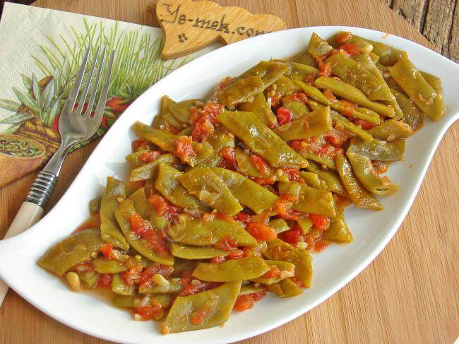

Yemek Tariflerine Hoş Geldiniz
Zeytinyağlı Taze Fasülye
Malzemeler
- 750 gr taze fasulye
- 2 adet orta boy soğan
- 3 adet domates (rendelenmiş ya da doğranmış)
- 3 diş sarımsak
- 1 çay bardağı zeytinyağı
- 1 tatlı kaşığı toz şeker
- 1 tatlı kaşığı tuz
- 1 su bardağı sıcak su
Yapılışı
- Fasulyeleri hazırlayın: Fasulyelerin başlarını ayıklayıp yıkayın. İsteğe göre ikiye ya da üçe bölün.
- Soğan ve sarımsağı kavurun: Geniş bir tencereye zeytinyağını alın. Yemeklik doğranmış soğanları ekleyip pembeleşene kadar kavurun. Üzerine ince doğranmış sarımsakları ekleyin.
- Domatesleri ekleyin: Rendelenmiş ya da küp doğranmış domatesleri ekleyip suyunu salana kadar pişirin.
- Fasulyeleri koyun: Ayıkladığınız fasulyeleri ekleyin. Tuz ve şekeri serpin, karıştırın.
- Suyunu verin: Üzerine 1 su bardağı sıcak suyu ilave edin. Kapağını kapatıp kısık ateşte fasulyeler yumuşayana kadar pişirin (yaklaşık 35–40 dakika).
- Dinlendirin: Ocağı kapattıktan sonra oda sıcaklığında soğutun. Buzdolabında dinlendirip soğuk servis edin.
✨ Soğuk servis edilen bu klasik zeytinyağlı enginar, özellikle ilkbahar aylarında en çok tercih edilen hafif ve sağlıklı yemeklerdendir.